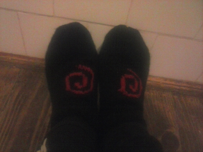

Programmer's life

Debian and FLOSS community don't only occupy coding developers. They occupy people who write news, who talk about FLOSS, who help on booths and conferences, who create artistic forms of the community and so many others that contribute in countless ways. A lady, that is doing many of that is Francesca Ciceri, known in Debian as MadameZou. She is non-packaging Debian Developer, a fearless warrior for diversity and a zombie fan. Although it sounds intimidating, she is deep caring and great human being. So, what has MadaZou to tell us?
I installed today Gogs and configured it with mysql (yes, yes, I know - use postgres you punk!). I will not post details of how I did it because:
And there was end of journey. When they code in fork/PR , I will close my eyes on other coding stuff and try it again because Gitlab is not close to my heart and installing their binary takes ~850MB of space which means a lot of ruby code that could go wrong way.
Notice: There were several requests for me to more elaborate on my path to Debian and impact on life so here it is. It's going to be a bit long so anyone who isn't interested in my personal Debian journey should skip it. :)
In 2007. I enrolled into Faculty of Mechanical Engineering (at first at Department of Industrial Management and later transfered to Department of Mechatronics - this was possible because first 3 semesters are same for both departments). By the end of same year I was finishing my tasks (consisting primarily of calculations, some small graphical designs and write-ups) when famous virus, called by users "RECYCLER", sent my Windows XP machine into oblivion. Not only it took control over machine and just spawned so many processes that system would crash itself, it actually deleted all from hard- disk before it killed the system entirely. I raged - my month old work, full of precise calculations and a lot of design details, was just gone. I started cursing which was always continued with weeping: "Why isn't there an OS that can whithstand all of viruses, even if it looks like old DOS!". At that time, my roommate was my cousin who had used Kubuntu in past and currently was having SUSE dual-booted on his laptop. He called me over, started talking about this thing called Linux and how it's different but de facto has no viruses. Well, show me this Linux and my thought was, it's probably so ancient and not used that it probably looks like from pre Windows 3.1 era, but when SUSE booted up it had so much more beautiful UI look (it was KDE, and compared to XP it looked like the most professional OS ever).
One of fresh additions to Debian, that is showing Debian's commitment to diversity in all fields is Laura Arjona Reina. A helpful hand on channels and a great flux of FLOSS energy she brings with herself. Although applied for non-packaging Debian Developer status, Laura does recognize that there are still some technical aspects what must grasp on. Her dedication to FLOSS and trying to solve some of its issues is astonishing, as this woman is doing a lot of self-hosting and system administration. Yes, you read it right - she does all of that and still applied for non-packaging Debian Developer. She is perfect example how FLOSS enhances humans in many ways. Hello Laura.
So according to latest survey the Icelandic Pirate Party is now the largest party in this awesome country. A reason more to move there, double of reasons to learn from the country that shown so many examples for society in last 6 years. Are they springing a new great modern society?
March 14, 2015 - 9:26:53
Give a man a fire and he's warm for the day. But set fire to him and he's warm for the rest of his life.
After starting with Joey Hess, we continue with Paul Wise. What makes his star to shine are many things such as being a DSA (Debian System Administrator), a helpful hand on mailings list, encouraging people to join Debian teams but most of all - he has encyclopedia knowledge on Debian as a whole which he gladly shares with anyone who asks (very fast response on IRC channels). It is almost impossible for any single person to count all Debian teams, work and places - to know most of those things, you can image the vast knowledge which Paul has. The legend says that his brain has better and faster search engine algorithm on Debian related queries than all other engines combined. So lets see what he has to share with world.
Mom and Debian is an awesome combination. :)
